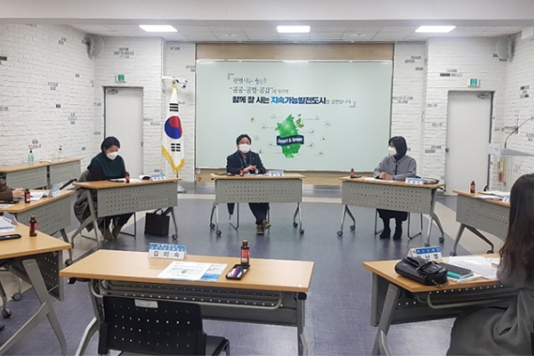
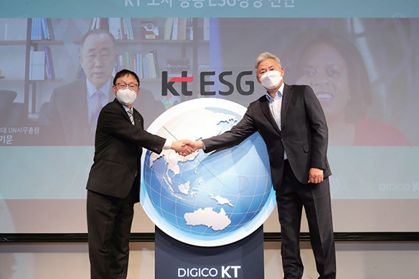

home > ESG경영 > ESG 활동
ESG 활동
NO.1 고객서비스 전문 기업 kt is
kt is 환경경영 정책
kt is는 지구 환경 개선에 기여하고 ‘Net Zero 2050’ 달성을 위해 환경경영의 대상, 범위, 특성 등을 복합적으로 고려하여 주요 환경경영 정책을 선언하고 방침을 정의하여 긍정적인 환경영향을 최대화하기 위해 노력하겠습니다. 또한, 매년 에너지 및 온실가스, 용수, 폐기물 배출량 항목별 5% 감축을 목표로 정책을 수립하고 아이템을 발굴하고 있습니다.

- 임직원 환경경영 교육
- 전사 임직원을 대상으로 ESG 온라인 교육 및 친환경 카드뉴스를 배포하고 이러한 환경교육을 지속적으로 시행하여 기후변화 등 주요 환경 이슈에 대해 교육을 시행하고 있습니다. kt is는 전사 임직원이 참여하는 환경경영을 추진하고자 합니다.

- 임직원 친환경 프로젝트 동참
- 다음 세대가 건강한 숲을 만날 수 있도록 kt is 임직원이 친환경 프로젝트에 참여합니다
- 1단계: 생활 속 에너지 절약 캠페인
- 2단계: 렌탈 제품 환경 친화적 전환
- 3단계: 건물 에너지/용수/폐기물 절감안 마련
기업지배구조헌장
- kt is (이하“회사”라 한다.)는 고객의 요구사항 해결을 넘어 숨어있는 니즈까지 선제적으로 발굴하고 해결하여 새로운 가치를 지속 제시함으로써 고객에게 어제보다 더 나은 삶을 제공하는 기업이 되고자 한다.
- kt is 기업지배구조헌장은 주주의 가치제고, 주주총회 및 독립된 이사회와 전문 경영인 간의 견제와 균형의 조화, 회사의 투명한 경영이 정착될 수 있는 전문 감사기구의 독립적 운영 등, 회사 경영의 근간이 되는 건전한 지배 구조의 나아 갈 방향을 선언하고 실행한다.